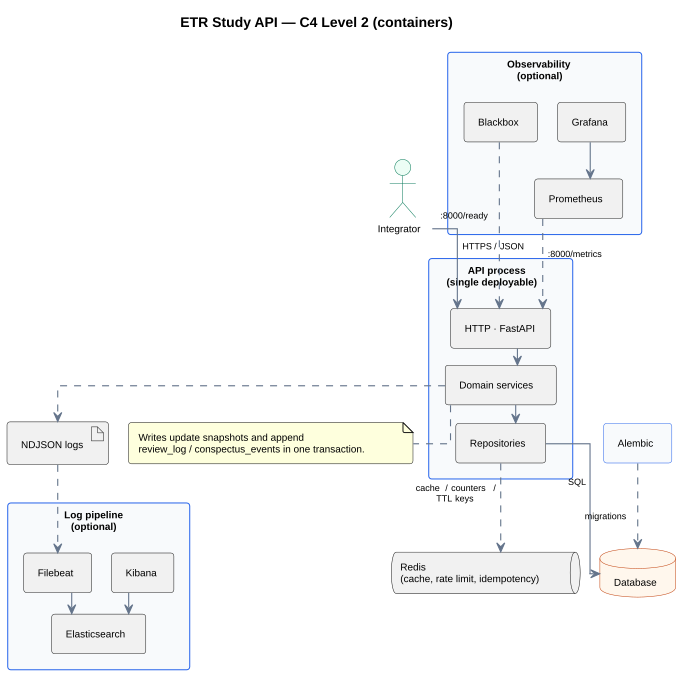

ETR Study API — System design
Overview
This document defines the system design of the ETR Study API: a single, versioned HTTP surface backed by a relational model that supports Extract–Transform–Retrieve study flows, spaced retrieval, and auditable history. It is written for engineers who implement, integrate, or operate the service.
It brings together:
- scope and explicit boundaries (what we intentionally leave out);
- a methodology traceability matrix and explicit non-goals (what the API does not model);
- the review suggestion model—how due work is computed, ordered, and distinguished from client-only habits;
- C4-style structural views (context, containers, components);
- a relational persistence model with a first-class
schedule_policiescatalogue, aligned with spaced retrieval; - tabular architecture decisions with alternatives and the selected option;
- functional and non-functional requirements, with pointers to OpenAPI and ADRs;
- references to sequence diagrams and the internal API catalogue.
The human workflow in Methodology remains the pedagogical
source
for vocabulary and intent. This document turns that intent into engineering contracts:
which
rules are enforced by the API, which are defaults carried by SchedulePolicy,
and
which stay client-side. Authoritative HTTP shapes and operation-level detail live in the
internal API hub once OpenAPI matches this design.
Scope and boundaries
The design is scoped to the HTTP API and the relational data model that underpins it. At the boundary we assume a single abstract actor, the integrator: any standards-compliant HTTP client. The deployable unit is modelled as one application process with one primary relational database. Horizontal scaling, connection pooling, and read replicas are deployment concerns once load and SLOs justify them.
| Category | In scope | Out of scope |
|---|---|---|
| Product | Users, conspectuses, versioned schedule policies, due retrieval state, review logs, learning errors, schedule summaries | End-user UX; specific clients (browser, mobile, bots); offline sync; voice-memo / walk workflows unless explicitly added |
| Platform | One API process, database, observability hooks | Kubernetes topology, ingress, service mesh, node pools |
| Security | API key, rate limits, CORS, idempotent writes | Enterprise IdP (e.g. Okta, Azure AD, Google Workspace) |
ETR methodology mapping
Level: Bridge to engineering. Methodology describes how humans study; this document assigns each concept to storage, policy, or client behaviour. Rows below name the primary artefact; see Methodology traceability for enforcement level.
| Methodology | System artefact | Notes |
|---|---|---|
| Three-column cue sheet (Extract) | conspectuses.cue_sheet + cue_sheet_schema_version |
Schema in Cue sheet JSON; validation tier in Content validation. |
| Transform (dense paragraph, 5–7 bullets) | dense_paragraph, bullets |
Counts and sentence limits are defaults / advisory unless product turns them into hard API validation. |
| Retrieve — four slots A–D, tags easy / hard / forgot | conspectus_schedules, schedule_policies,
conspectus_review_logs |
Slot ladder and delays are data-driven via SchedulePolicy (see Reference policy). |
| What to review next (“due” work) | next_review_at, due queries, ordering rules |
Mechanism in Review suggestion and scheduling logic. |
| Evening random review from Slot A | — | Not a server obligation: client samples from listed conspectuses (see Non-goals). |
| “Succeed twice in a row” before advancing | optional future: review_streak or session metadata |
Not in the baseline schema; SRS tags drive schedule transitions today. |
| Error log → next Transform pass | learning_errors; content still CONTENT_PATCHED via events |
Remediation workflow (open loops, tasks) is product/UX, not implied by the error row alone. |
| Out-of-home walk / voice memo loop | — | Out of scope unless a dedicated capture API is added; content still lands in Transform fields. |
Methodology traceability matrix
Each methodology idea is classified so implementers do not guess: invariant (must hold in production data), default (shipped policy or OpenAPI default), advisory (documented, soft validation), client (learner or app behaviour only), out of scope.
| Methodology element | Class | Where it lives |
|---|---|---|
| Separate cues from full notes (anchors, not transcripts) | Advisory | API may warn on payload size; cue sheet shape validates against
cue_sheet_schema_version. |
| Three columns: keywords, questions/gaps, hints | Invariant (shape) | cue_sheet.rows[].keyword, .question, .hint for schema v1
(see Cue sheet JSON). |
| Pause every 5–10 minutes; ~50 min Extract block | Client | Timers and UX; not stored server-side. |
| Single master conspectus after Transform | Invariant | One schedule row per conspectus; content snapshot on conspectuses. |
| Paragraph ≤ 5 sentences; 5–7 bullets | Advisory → optional invariant | Document as limits; promote to strict validation via ADR if product requires. |
| Slot A today → B tomorrow → C +3d → D +7d then 14, 30… | Default | schedule_policies.rules for the reference policy; other products may ship different
policies. |
| Tag easy / hard / forgot; hard/forgot reset toward A | Invariant (behaviour) | Deterministic transitions in the active SchedulePolicy for the row. |
| Evening random drill | Client | Client queries a pool (e.g. by slot) and samples; API lists, does not randomize for the user. |
| Error log drives next Transform | Client / product | Server stores errors; prioritising study sessions is UX. |
Explicit non-goals (methodology vs API)
To avoid silent mismatch between Methodology and this service, the following are not required behaviours of the HTTP API in the baseline design:
- Random “evening review” selection — the API exposes due times and filters; random sampling of older items is a client algorithm.
- Consecutive success counts (“twice in a row”) — not represented in
conspectus_review_logs; adding it is a schema and product change. - Walk / audio capture pipeline — voice memos and offline capture are out of scope until dedicated endpoints and storage exist.
- Automatic remediation scheduling after
learning_errors— errors are data; scheduling the next Transform session is UX. - Teaching quality scoring — no NLP or rubric evaluation of paragraph quality.
If product later needs any of the above, add ADRs and extend OpenAPI; do not assume they are implied by methodology text alone.
Review suggestion and scheduling logic
“What should I review now?” splits into server-backed due retrieval (grounded in
next_review_at and policy) and client habits (random drills, time-boxing) that
the
API does not own.
1. Due set (server)
For a learner, the due conspectuses at instant t (UTC) are those owned by the
user where conspectus_schedules.next_review_at <= t, subject to soft-delete or archive flags
if
introduced later. This is the primary input to any “suggestion” API: temporal ordering, not
pedagogical ranking beyond policy.
Calendar “today” (e.g. “due today in my timezone”) is next_review_at
interpreted in
the user’s IANA timezone (see users.timezone), then compared
to
the local calendar date. Until timezone is set, due filtering should use UTC boundaries only—documented in
API
responses (see Risks).
2. Ordering (stable tie-breakers)
When multiple conspectuses are due, return order should be deterministic:
next_review_atascending (most overdue first);- then
conspectuses.created_atascending (older content first); - then
conspectus_uuidlexicographic (total order for pagination).
Product may additionally boost “new” or “forgotten-heavy” items in the client; the server baseline stays explainable and replayable from timestamps alone.
3. Applying a review (state transition)
A review is one learner decision captured as tag ∈ { easy, hard, forgot } at
time
reviewed_at. The server:
- Loads the conspectus schedule and resolves the active policy row in
schedule_policies(matchingschedule_policy_idandalgorithm_versionon the schedule). - Computes
(slot', slot_d_ladder_index', next_review_at')from(slot, slot_d_ladder_index, tag)using immutablerulesJSON for that policy version. - Updates
conspectus_schedulesatomically and appends one row toconspectus_review_logswithschedule_before/schedule_aftersnapshots and incrementsschedule_revision(optimistic concurrency—see Persistence).
Idempotency replays the same HTTP request; optimistic concurrency rejects two different reviews racing on the same conspectus—distinct concerns (see Cross-cutting notes).
4. What the API does not compute
- Random evening sample — clients list candidates (e.g. filter by
slot = 'A'via summary API) and shuffle locally. - Interleaving subjects — cross-topic ordering is UX.
- “Next best” across competing study goals — would require goals and priorities not in the baseline model.
Reference default SchedulePolicy (methodology-aligned)
Illustrative. Product may ship different delays; history remains interpretable because each review log stores policy identifiers and snapshots. The table below matches the four-slot cadence in broad strokes.
| Field | Example value | Role |
|---|---|---|
schedule_policy_id |
etr_methodology_four_slot |
Stable name for the policy family. |
algorithm_version |
1.0.0 |
Bump when transition rules change; never rewrite old log rows. |
rules (JSON) |
Encodes: allowed slot values A–D; for each
(slot, tag) the next slot, optional slot_d_ladder_index for D-tier rungs,
and
delay_from_review_at (e.g. PT1H for first retrieval, P1D,
P3D, then D ladder 7d → 14d → 30d → … for easy);
hard
and forgot map to reset toward Slot A per product decision (see Forgot vs hard).
|
|
New conspectuses receive this policy by default at creation time unless the integrator passes another
schedule_policy_id that already exists in schedule_policies. Seeding the reference
row
is a deployment concern (migration or admin task).
Content validation policy (cue sheet, paragraph, bullets)
Methodology recommends bounds (sentence and bullet counts, lean cues). The API should validate in layers:
- Hard — JSON schema for
cue_sheetmatchescue_sheet_schema_version; request rejected on parse failure. - Soft — optional warnings in logs or response extensions when bullets fall outside 5–7 or paragraph length exceeds guidance (feature-flagged).
- None — free text allowed where product does not enable pedagogy mode.
Exact numeric limits belong in OpenAPI once product selects strict vs advisory mode; this document requires
only
that cue_sheet_schema_version exists before evolving cue_sheet shape.
Problem statement
Goal: a versioned HTTP API that durably supports ETR learning workflows.
Problem: retention collapses when rehearsal and state are not persisted with clear history.
Approach: a transactional service that separates content from schedule state, maintains append-only review and event logs, and exposes stable error semantics to integrators.
Domain model (aggregates and lifecycle)
The following aggregates map to relational tables (see the conspectus ER diagram):
-
User (
users) — tenant boundary. Primary keyclient_uuid. External identifiers(system_user_id, system_uuid)resolve to this row, consistent with the User API. Optionaltimezone(IANA string, e.g.Europe/Berlin) supports calendar-day due views; if null, due endpoints document UTC-only semantics. -
Conspectus (
conspectuses, PKconspectus_uuid) — the canonical note after Transform:cue_sheet,dense_paragraph,bullets, optionaltitle,cue_sheet_schema_version(integer, default 1), ownership viaowner_client_uuid, monotoniccontent_version, and optional fields for large-body or hybrid storage. -
SchedulePolicy (
schedule_policies) — versioned catalogue of spaced-repetition rules. Composite natural key(schedule_policy_id, algorithm_version); carries immutablerulesJSON and metadata. Referenced byconspectus_schedulesso transitions stay auditable after policy updates. -
ConspectusSchedule (
conspectus_schedules, 1:1) — mutable retrieval state only:-
slot— coarse position on the A–D ladder (aligns conceptually with Methodology: Retrieve); -
slot_d_ladder_index— policy-specific sub-step (e.g. rung within the D tier), updated withslotaccording to the active(schedule_policy_id, algorithm_version)row; next_review_at— drives due lists and any scheduling UX;-
schedule_policy_id+algorithm_version— foreign key toschedule_policies; together they select the immutablerulesused at review time. -
schedule_revision— monotonic integer incremented on each successful schedule write; clients send expected revision on review to detect concurrent sessions (see Cross-cutting notes).
-
-
ConspectusReviewLog (
conspectus_review_logs) — append-only: one row per review with outcome tag,reviewed_at,schedule_policy_id+algorithm_version(denormalized from the policy used), and immutableschedule_before/schedule_afterJSON for audit. This is the system of record for review outcomes. -
ConspectusEvent (
conspectus_events) — append-only facts that are not review outcomes: creation, content patches, title changes, and (per D6) manual schedule adjustments such asSCHEDULE_ADJUSTED. -
LearningError (
learning_errors) — records weak cues or mistakes for remediation; semantically distinct from SRS tags. Optionalreview_log_idties an error to a review session when both are captured together. Conflating this with review outcomes requires an explicit product decision and schema discriminant.
Lifecycle (summary): resolve default schedule_policies row → create
conspectus,
initial schedule (with policy FK + schedule_revision = 1), and a CREATED-class
event →
query by next_review_at per Review suggestion → review
command inserts into conspectus_review_logs and updates conspectus_schedules →
content PATCH appends to conspectus_events → learning errors stand alone or commit in the same
transaction as a review (with review_log_id when applicable).
C4 decomposition
The service is a modular monolith: FastAPI, one database primary, Redis for distributed
runtime concerns (rate limits, idempotency cache, short-lived keys), optional metrics and log
pipelines. Regenerate diagrams with make docs-fix.
System context
Integrator, API, database, OCI image, optional observability.

docs/uml/architecture/system_context_view.pumlContainers
API process, database, Redis runtime store, migrations, optional pipelines.

docs/uml/architecture/container_view.pumlComponents
User, Conspectus, error log, SchedulePolicy.

docs/uml/architecture/system_component_view.pumlPersistence and schema (relational baseline)
The schema separates note content (cue sheet, paragraph, bullets) from schedule
state. SchedulePolicy is a first-class catalogue table so
schedule_policy_id is never a dangling string. Each review (retrieval outcome)
is append-only in conspectus_review_logs, with immutable schedule_before /
schedule_after JSON plus schedule_policy_id and algorithm_version
copied for audit (matching the policy row used for the transition). Non-review mutations append to
conspectus_events (e.g. CREATED, CONTENT_PATCHED,
TITLE_CHANGED).
Canonical rule: do not mirror every review into conspectus_events unless an
ADR
explicitly requires a BI-oriented duplicate—the review log is the source of truth for scheduling history.
Read models (conspectuses, conspectus_schedules) update in the
same transaction as the corresponding log insert(s).
Naming: In prose the aggregate is conspectus (singular). Physical tables
use
plural snake_case—e.g. conspectuses, conspectus_schedules,
conspectus_review_logs—as in the ER diagram.
Sections
may refer to conspectus_schedule logically; the table is conspectus_schedules.
Entity–relationship
Core tables
Ownership, 1:1 schedule, append-only logs and events, optional learning-error link.

docs/uml/architecture/conspectus_er.pumlTables, keys, and roles
| Table | Keys / FK | Role |
|---|---|---|
users |
PK client_uuid; unique (system_user_id, system_uuid) |
Identity and tenant boundary. Optional timezone for local “due today” semantics (see
Review suggestion).
|
schedule_policies |
PK (schedule_policy_id, algorithm_version); optional unique policy_uuid
for
external references
|
Immutable versioned rules: name, rules (JSON), created_at.
Seeded
with the reference policy; new versions add rows, never
mutate history.
|
conspectuses |
PK conspectus_uuid; FK owner_client_uuid → users |
Content snapshot: title, cue_sheet (JSON),
cue_sheet_schema_version (int), dense_paragraph, bullets
(JSON),
content_version, created_at, updated_at (see
due ordering). For hybrid storage: body_storage,
external_document_id, content_sha256, sync_status (see
Hybrid storage).
|
conspectus_schedules |
PK/FK conspectus_uuid → conspectuses ON DELETE CASCADE; FK
(schedule_policy_id, algorithm_version) → schedule_policies
|
slot, slot_d_ladder_index, next_review_at,
schedule_revision (bigint, ≥ 1), schedule_updated_at. Optional
denormalized
owner_client_uuid for index-only due queries (space vs join).
|
conspectus_review_logs |
PK id; FK conspectus_uuid |
Append-only: tag, reviewed_at, schedule_before /
schedule_after, schedule_policy_id, algorithm_version
(denormalized
from the policy row used for the transition).
|
conspectus_events |
PK id; FK conspectus_uuid |
Append-only lifecycle: event_type, payload, schema_version,
optional correlation_id. |
learning_errors |
PK error_uuid; FK owner_client_uuid; optional conspectus_uuid
→ conspectuses ON DELETE SET NULL; optional review_log_id →
conspectus_review_logs
|
Pedagogical mistake log—distinct from SRS tags in conspectus_review_logs. Use
review_log_id to correlate with a specific review when both are recorded.
|
idempotency_keys |
Unique (owner_client_uuid, endpoint_path, idempotency_key) (or equivalent scoped to the
authenticated principal)
|
Deduplication of critical writes; keys must not collide across users. |
Indexes (typical queries)
-
Due workload: composite
(owner_client_uuid, next_review_at)onconspectus_schedulesifowner_client_uuidis denormalized; otherwise joinconspectusesfor ownership and indexconspectus_schedules(conspectus_uuid, next_review_at). - Conspectus listing:
(owner_client_uuid, updated_at DESC)onconspectuses. - Review history:
(conspectus_uuid, reviewed_at DESC)onconspectus_review_logs. -
Learning errors:
(owner_client_uuid, created_at DESC); optional(conspectus_uuid, created_at DESC). - Idempotency: unique scope must include
owner_client_uuid(or API principal), not only path + key. - Policy catalogue:
(schedule_policy_id, algorithm_version)onschedule_policiesis already the primary key.
Schema design notes (fixes vs earlier drafts)
-
schedule_policieswas missing. Referencingschedule_policy_idwithout a parent row breaks referential integrity and makes migrations non-replayable; the catalogue table is required. -
algorithm_versionon the schedule. The schedule row must carry bothschedule_policy_idandalgorithm_versionto reference exactly one immutable policy row (composite FK). -
schedule_revision. Reviews need optimistic concurrency independent of idempotency keys; bump on every schedule mutation. -
cue_sheet_schema_version. Prevents silent JSON drift; pair with migrations whencue_sheetshape changes. -
idempotency_keysscope. Global uniqueness on(endpoint_path, idempotency_key)would let two users collide; scope by owner / principal. -
learning_errors.conspectus_uuid. PreferON DELETE SET NULLso deleting a conspectus does not orphan errors that should remain for analytics, or chooseCASCADEif errors must disappear with the note—product decision, documented in migrations.
Cue sheet, bullets, paragraph: SQL JSON vs external document
Default: store cue_sheet, bullets, and
dense_paragraph
inline (JSON / TEXT). This respects typical body-size limits, keeps backup and transactions straightforward,
and
allows JSON evolution through migrations and validation.
Cue sheet JSON (schema v1)
For cue_sheet_schema_version = 1, cue_sheet is an object with a rows
array. Each row aligns with the three-column mental model in
Methodology · ETR at home:
keyword— short anchor (one to three words).question— question or gap (“What are the three steps of X?”).hint— brief answer cue (optional on early rows; methodology allows one- to three-word hints).
Validation: reject unknown keys or missing rows when strict mode is on; future schema versions
add columns rather than overloading strings. See Content validation
policy.
| Criterion | Inline in RDBMS | External blob or document store |
|---|---|---|
| Size / SLO | Appropriate while under configured maximum body size. | Prefer when payloads grow large or binary attachments appear. |
| Versioning | content_version plus event payloads; migrate JSON with scripts. |
Object version / ETag in store; SQL holds pointer and hash. |
| Full-text search | PostgreSQL FTS or generated columns; SQLite is more constrained. | Often a dedicated search tier (operational cost). |
Hybrid SQL + object or document store (optional)
When bodies are externalised, SQL must still anchor: conspectus_uuid, ownership,
body_storage (inline vs external), external_document_id,
content_version or
etag, content_sha256, and optionally sync_status. Viable options span self-hosted
S3-compatible storage, managed object tiers with free allowances, or document databases—selection is driven
by
operational cost, egress, and consistency semantics, not by a single vendor.
Risks and mitigations:
- Split writes — use outbox or staged upload, compensating deletes, TTL-based GC for orphaned blobs.
- Migrations — dual-write phases and backfills; version payloads in
conspectus_events. - Search — if indexing leaves the database, treat the search pipeline as a first-class operational dependency.
Failure modes (SQL vs blob)
There is no distributed transaction between the RDBMS and an external store; recovery relies on status fields and compensating actions.
| Scenario | Detection | Mitigation |
|---|---|---|
| SQL committed; blob write failed | sync_status in pending/failed; missing hash/etag |
Retry upload with the same Idempotency-Key; do not delete the SQL row from GC |
| Blob written; SQL rolled back | Orphan object key | Key prefixing, TTL GC, no user attachment until SQL commits |
| Drift between SQL and blob | content_sha256 mismatch |
Fail read or serve stale per policy; repair job re-fetch or re-upload |
Architectural decisions
Each subsection compares credible alternatives. Rows with class="decision-chosen" (highlighted)
record the option adopted for this codebase. Rejected options remain visible to avoid re-litigating settled
trade-offs.
D1 — Review history vs general conspectus history
| Option | Description | Pros | Cons |
|---|---|---|---|
| A Dual journals | conspectus_review_logs for reviews; conspectus_events for other facts
|
SRS-aligned; straightforward review queries | Two append-only streams |
| B Unified stream | Single conspectus_events including REVIEW_APPLIED |
One table | Mixed access patterns and filtering cost |
| C Dual + mirror | A plus duplicate schedule transitions in events | Unified BI timeline | Duplication and consistency risk |
Rationale (D1): A dedicated conspectus_review_logs matches how production SRS
systems isolate high-volume retrieval traces. Non-review edits remain in conspectus_events
without
forcing reviews through a generic envelope.
D2 — Body storage
| Option | Description | Pros | Cons |
|---|---|---|---|
| Inline JSON/TEXT | Columns on conspectuses |
Single transaction; simple backup | Larger rows |
| Object store | Pointer and etag | Scales large blobs | Two-phase writes |
| Document DB | External document + FK in SQL | Flexible schema | Second system |
Rationale (D2): Default inline storage fits expected limits; externalise when measurements prove it necessary.
D3 — Schedule shape
| Option | Description | Pros | Cons |
|---|---|---|---|
conspectus_schedules table |
1:1 with conspectus | Clear separation of concerns | Join on read |
| Wide row | All columns on conspectuses |
No join | Blurs content and schedule evolution |
D4 — Database engine
| Option | Description | Pros | Cons |
|---|---|---|---|
| SQLite | Development and small deployments | Minimal operations | Write throughput limits |
| PostgreSQL | Scale-out and concurrency path | Rich concurrency model | Higher operational burden |
Rationale (D4): The schema stays portable; SQLite is the default; PostgreSQL when load or HA demand it.
D5 — Learning errors vs review outcomes
| Option | Description | Pros | Cons |
|---|---|---|---|
| A Separate tables | conspectus_review_logs for tags; learning_errors for detail; optional
review_log_id |
Clear semantics and queries | Two inserts when both are captured |
| B Single stream | One table for all events including mistakes | Single append path | Mixed schemas; heavier filtering |
Rationale (D5): SRS tags drive scheduling; learning errors capture remediation detail.
Correlation is optional via learning_errors.review_log_id.
D6 — Manual schedule change vs review
| Option | Description | Pros | Cons |
|---|---|---|---|
| A Events only | Manual reschedule appends conspectus_events (e.g. SCHEDULE_ADJUSTED),
not conspectus_review_logs |
No synthetic review rows | Schedule changes read from two sources |
| B Duplicate into review log | Every move also logged as review | Single “movement” table | Conflates retrieval with editorial edits |
Rationale (D6): Keep conspectus_review_logs strictly for retrieval outcomes
unless a future ADR mandates a BI mirror.
D7 — schedule_policies catalogue vs code-only rules
| Option | Description | Pros | Cons |
|---|---|---|---|
| A Catalogue table + seed | schedule_policies holds (schedule_policy_id, algorithm_version) and
rules JSON; services join for validation |
Referential integrity; auditable defaults; reproducible transitions | Extra table and seed migrations |
| B Code-only | Policy IDs in rows but rules live only in application memory | Simple DDL | History depends on deploy version; harder to explain snapshots |
| C Unversioned JSON blob on schedule | Copy full rules onto each conspectus_schedules row |
Self-contained rows | Large rows; policy drift across conspectuses |
Rationale (D7): A catalogue row is the smallest structure that supports composite FKs from
conspectus_schedules, keeps methodology-aligned defaults seedable, and matches how review logs
store policy identifiers for audit.
Load and capacity
The figures below are illustrative—they support early sizing and storage discussions, not customer-facing SLAs. Replace them with product forecasts before publishing formal targets. Burst factors reflect bursty review sessions rather than uniform request rates.
| Parameter | Example | Note |
|---|---|---|
| Active learners | 10 000 | MAU-style order of magnitude |
| Reviews / learner / day | 5 | SRS-shaped load |
| Mean review insert rate | ~0.6/s | 50k/day ÷ 86 400 s |
| Burst factor | 10–50× | Session peaks |
At roughly 0.5 KB per review log row, 50k reviews/day ≈ 25 MB/day append-only (~9 GB/year before indexes)—validate in staging.
Target p95 < 300 ms on light SQLite; move to PostgreSQL and stateless replicas when concurrency requires it.
Functional requirements
Behaviour the service must expose to integrators; concrete request shapes are defined in OpenAPI and the internal API hub.
| ID | Requirement | Description |
|---|---|---|
| FR-1 | User management | Create and resolve users by system_user_id and system_uuid; preserve
stable client_uuid for ownership checks. |
| FR-2 | Conspectus create |
Accept ETR-shaped payloads (cue_sheet, dense_paragraph,
bullets, optional title); persist snapshot and initial schedule per
SchedulePolicy; append a CREATED domain event.
|
| FR-3 | Retrieve and review |
List due conspectuses; apply deterministic transitions from tags
(easy/hard/forgot); append
conspectus_review_logs with schedule snapshots.
|
| FR-4 | Learning error log |
Store and list weak-cue records; optional links to conspectus and (via review_log_id)
to a review session—semantically distinct from review tags (see Domain
model).
|
| FR-5 | Schedule insight | Expose aggregate slot distribution and schedule guidance (e.g. summary endpoint) for clients and dashboards. |
| FR-6 | Due conspectuses (“what to review”) |
List conspectuses due at or before a reference time, ordered per Review suggestion; respect optional user timezone
for calendar-day filters when specified in OpenAPI.
|
| FR-7 | Schedule policy resolution |
On create and review, resolve (schedule_policy_id, algorithm_version) against
schedule_policies; reject unknown or retired pairs with a stable error (see ADR error
contract).
|
Non-functional requirements
Quality attributes for operators and integrators; security and observability ADRs apply in full.
| ID | Requirement | Description |
|---|---|---|
| NFR-1 | Performance | Typical requests complete under 300 ms p95 with a local DB and light load; capacity figures remain illustrative (see Load and capacity). |
| NFR-2 | Reliability | Writes are transactional; failures roll back and return stable errors per ADR 0003. |
| NFR-3 | Maintainability | Strict layering (routers → services → repositories); automated contract and endpoint tests are mandatory. |
| NFR-4 | API governance | OpenAPI and error contracts evolve in an additive, backward-compatible manner per versioning policy. |
| NFR-5 | Observability |
Structured logs; Prometheus on /metrics (config-gated); /health and
/ready; optional local stack per
ADR 0009 and SLO guidance in
ADR 0011.
|
| NFR-6 | Security by default | API-key auth, per-route rate limits, body size limit, CORS allowlist, security headers per ADR 0005. |
| NFR-7 | Idempotency | Critical writes support safe retries via Idempotency-Key and persisted deduplication
(ADR 0006). |
| NFR-8 | Packaging | Production Dockerfile and OCI workflow per ADR 0015 (make docker-build). |
API style and transactional boundaries
Use resource-oriented REST under /api/v1 (conspectuses, schedule summary,
learning
errors, users) with command-style sub-resources where appropriate (e.g.
…/actions/review).
This aligns with OpenAPI governance, resource ownership, and HTTP caching semantics. Read models are current
snapshot rows; history is exposed only where product needs justify dedicated endpoints.
Critical writes (single transaction)
| Operation | Transaction touches | Idempotency |
|---|---|---|
| Create conspectus | Insert conspectus + schedule + CREATED event |
Required Idempotency-Key (POST collection) |
| Review | Update schedule (bump schedule_revision) + insert conspectus_review_logs
(no duplicate schedule event in conspectus_events by default) |
Required; scoped to resource; body carries expected schedule_revision |
| Review + learning error | Same as review + insert learning_errors with review_log_id pointing at
the new log row |
Prefer one request and one transaction; alternatively two calls with explicit correlation |
| PATCH conspectus | Update body + bump content_version + content event |
Required per resource |
| Create learning error | Insert learning_errors (optional review_log_id) |
Required |
API contracts and security defaults
Interactive schema: Swagger UI (local). Governance: ADR 0005, ADR 0003.
| Constraint | Default | Impact |
|---|---|---|
| Authentication | X-API-Key on /api/v1/* |
Unauthorized calls return 401. |
| Rate limiting | 60 requests / 60 s per client and path | Overflow returns 429; clients must back off. |
| Request body size | 1 MB (API_BODY_MAX_BYTES) |
413 above limit; large assets require a dedicated flow. |
| CORS | Allowlist origins | Browser clients from non-allowed origins cannot call the API directly. |
| Idempotency | Required for critical writes | Safe retries; reusing a key with a different body yields 409; deduplication rows in
the database. |
Cross-cutting specification notes
Level: engineering rules that should surface in OpenAPI or ADRs before implementation freeze; they complement the domain model.
-
SchedulePolicy.
schedule_policiesis the source of truth for immutablerules. Treat(schedule_policy_id, algorithm_version)on schedules and logs as a foreign key to that table. Policy changes add new rows; historicalconspectus_review_logsstay interpretable via stored snapshots and denormalized policy ids. -
Concurrency on the same conspectus. Use
content_version(If-Match / conditional PATCH) for content. For reviews, require an expectedschedule_revision(or equivalent) onconspectus_schedulesto reject stale double-submits from two devices—distinct from idempotent replay of the same request. -
Cue sheet JSON evolution. Persist
cue_sheet_schema_version(column or embedded metadata) so row migrations can transform legacy JSON; validate at the API boundary. - Multi-device / offline sync. Out of scope for a minimal API; if introduced later, define conflict policies separately for content and schedule (e.g. server-wins on schedule unless an ADR specifies otherwise).
Risks and open questions
-
Schedule policy details — encode delays in
schedule_policies.rules; seed the reference policy for methodology alignment, then validate in QA with replay tests fromconspectus_review_logs. -
Forgot vs hard — identical reset behaviour or not; must be fixed in
rulesJSON before UX commitments. -
Timezone —
users.timezoneshould drive calendar-day due filters; until populated, document UTC-only behaviour in list endpoints to avoid silent off-by-one “today” bugs. -
Concurrency — ordering between PATCH and review; optimistic locking via
content_versionis recommended for content. - Retention / GDPR — policies for append-only logs, export, and deletion.
ADR roadmap (toward a canonical document)
Promote the items below into numbered ADRs when ready to lock behaviour; until then, Architectural decisions on this page is the working record.
- Dual journals (D1) —
conspectus_review_logsvsconspectus_events; no duplicate review rows in events unless a BI ADR requires it. - Body storage default (D2) — inline JSON/TEXT; externalise only when measured.
- Schedule table shape (D3) — 1:1
conspectus_schedules. - RDBMS engine (D4) — SQLite for development; PostgreSQL for scale.
- Distributed runtime store — Redis for shared rate limits, idempotency cache, and short-lived keys.
- Learning errors (D5) — separate from review tags; optional
review_log_id. - Manual schedule edits (D6) — via events, not synthetic reviews.
- Optional external content — pointer columns,
sync_status, outbox/GC, failure modes (see Hybrid storage). - Schedule policy catalogue (D7) —
schedule_policiesseeding, retirement, and invalidation of unknown policy ids at create/review time. - Schedule policy versioning — how ladder changes affect interpretation of historical
conspectus_review_logsrows (snapshots + policy ids on each log). - Content pedagogy mode — when to turn soft cue-sheet checks into hard API validation.
Human workflow text stays in Methodology; engineering truth is this page plus OpenAPI and migrations. Remove or reconcile conflicting draft text elsewhere.
Sequences
Implementations append logs in the same transaction as snapshot updates. Sources:
docs/uml/sequences/.
Create conspectus

create_conspectus_sequence.pumlReview

review_retrieve_sequence.pumlError log

error_log_sequence.pumlPage history
| Date | Change | Author |
|---|---|---|
| Added Redis to system stack description and C4 container schema references. | Ivan Boyarkin | |
| Added Page history section (repository baseline). | Ivan Boyarkin |